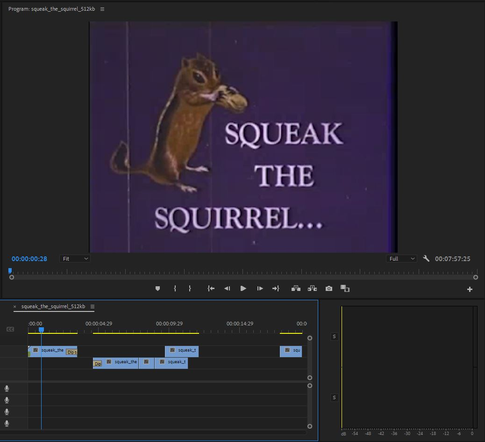
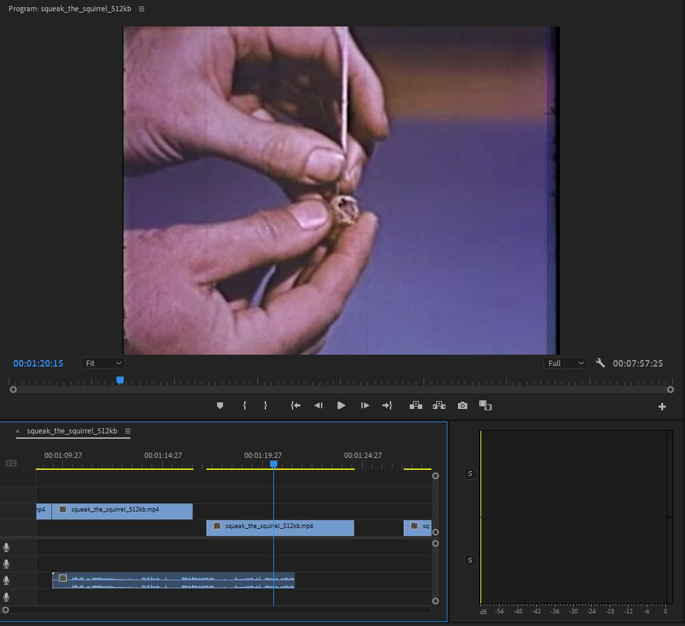

class="spin"
class="spin" Assignment 1
Video Editing / Time
Assignment 1 was a video editing assignment designed to teach us Adobe Premiere & the utilisation of Sound & Video together to recontextualise a video.
P l a n n i n g
When constructing the video, I had to take apart and figure out how I can recontextualise the video's current clips. This did challenge my thinking however, the primary aim of the class to figure out how to bring sound and video together which I thought I already knew, however I actually didn't realise the extent of sound as a whole.

S t o r y b o a r d
The storyboard phase of this assignment was probably the most interesting yet hardest, I found that most of the clips we're pretty hard to use in a efficient manner. So, I ended up wasting a lot of time trying to figure out how I could utilise the videos, in the end I went with a looney tunes kind of feel. I felt this take would be fresh and interesting from what I had heard the other students chose to do, also Squeaks video's were used quite a lot meaning I didn't want to double down on a similar pre-existing idea. Assignment 1 was officially underway.
P o s i t i v e s
I felt a strong sense of success when getting my idea together, I had giant cartoon sound libraries in my pc with one download saving a lot of time searching for sounds. I also felt my idea was good since the videos are old, that meant the footage and audio originally wouldn't have been so great and limits the dialogue immensely, so I opted to take advantage of my restrictions. The restrictions being, no or little voiceover, stastic sounds, minimal dialogue and overall a very documentary feel.
However, that meant once I had started to change the assignment up, it would be totally different and gives a whole new interpretation to view the video. Another strong success was finding nice sound cues in the squirrel itself, the quick rapid movements made use of the similar sounds roadrunner made or a chase scene. This worked greatly in my favour in establishing a vibe in my video.
N e g a t i v e s
As much as I felt success, I also felt the brunt of not knowing what to do for quite sometime, I pride myself in finding a interesting method/approach for things to keep it fresh and innovative. However the first real brickwall was not being able to make full use of my idea and the video, I found it was quite hard finding suiting sounds for the video, and it made me realise how important the sound production is. As muchas I had insight, I was also rather quite blind during this assignment, it may have been my lowest scoring assignment thus far, but it definitely meant I could step up my game.